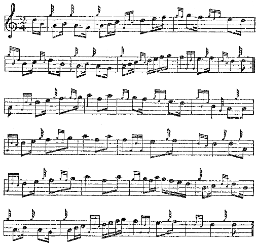

Folk said that winter that the War had done feint the much good to Mutch of Bridge End. In spite of his blowing and boasting, his silver he might as well have flung into a midden as poured in his belly, though faith! there wasn’t much difference in destination. He’d gone in for the Irish cattle, had Mutch, quick you bought them and quick you sold and reaped a fine profit with prices so brave. More especially you did that if you crammed the beasts up with hay and water the morning before they were driven to the mart, they’d fairly seem to bulge with beef. But sometimes old Aitken of Bervie, a sly old brute, would give a bit stirk a wallop in the wame and it would belch like a bellows, and Aitken would say, Ay, Mutch, the wind still bloweth as it listeth, I see, he was aye quoting his bits of poetry, Aitken.
But he’d made silver for all that, Mutch, and many an awful feed had his great red lugs overhung, there in the Bridge End while the War went on. For that was how it struck him and his family, they’d gorge from morn till night, the grocer would stop three times a week and out to him Alec and his mistress would come, the bairns racing at the heels of them, and they’d buy up ham and biscuits and cheese and sausage, and tins of this and tins of that, enough to feed the German army, folk told—it that was said to be so hungry it was eating up its own bit corpses, feuch!
Though faith! it was little more than eating their own corpses they did at Bridge End. And what little they left uneaten they turned to drink, by the end of the War he’d got him a car, had Alec, it was only a Ford but it clattered up and down the road to Drumlithie every day of the week, and back it would bump to the Bridge End place with beer in crates and whisky in bottles wagging drunken-like over the hinder end. But Alec would blow and boast as much as ever, he’d say the Bridge End was a fine bit place and could easily stand him a dram—it’s the knack of farming you want, that’s all.
Mutch had just got up and come out blear-eyed that day when the postman handed him the letter from Kinraddie House. So he had one read of it and then another, syne he cried to his wife Nine hundred pounds—have YOU got nine hundred pounds, you? And she answered him back, canty and cool, No, I’ve seen neither silver nor sense since I married you. Why do you need nine hundred pounds? So Alec showed her the letter, ‘twas long and dreich and went on and on; but the gist of it was the Trustees were to sell up Kinraddie at last; and the farmers that wanted them could buy their own places; and if Mutch of Bridge End still wanted his the price was nine hundred pounds.
So that was how the Mutches left Kinraddie, they said never a word about buying the place, Alec sold off his stock fell quietly and they did a moonlight flit; some said they heard the Ford that night go rattling up by Laurencekirk, others swore that Mutch had gone north to Aberdeen and had got him a fine bit job in a public-house there. North or south, feint the thing more folk saw of him; and before the New Year was out old Gordon of Upperhill had bought up the Bridge End forbye his own place, he said he would farm the fields with a tractor. But damn the tractor ever appeared, he put sheep on the place instead, and sometimes the shepherd would wander into the kitchen where that gley-eyed wife of Mutch had sat to smoke her bit cigarettes; and he said that the smell of the damned things lingered there still, they’d been as unco at changing their skirts, the Mutches, as ever old Pooty had been.
What with his Germans and ghosts and dirt, he’d fair been in a way, had old Pooty. Long ere the War had finished he’d have nothing to do with the mending of boots, he wouldn’t let the grocer up to the door, but would scraich at him to leave the messages out by the road. And at last he clean went over the gate, as a man might say, he took in his cuddy to live with him there in the kitchen, and the farmer lads going by on their bicycles of a Saturday night would hear the two of them speaking together, old Pooty they’d hear, thinking himself back at some concert or other in the olden days, reciting his TIMROUS BEASTIE, stuttering and stammering at the head of his voice. And then he’d be heard to give the donkey a bit clout, and Damn you! Clap, you creature! he’d cry; and it was a fair entertainment.
But at last it grew overmuch to bear, that was just about the month when the letters went out from the Trustee childes, and folk said that fell awful sounds were heard coming from the Pooty place, the creature was clean demented. Not a body would do a thing till at last old Gordon did, he roaded off with his foreman, they went in old Gordon’s car, it was night, and the nearer they came to Pooty’s the more awful came the sounds. The cuddy was braying and braying in an awful stamash, they tried to look through the window, but there was a thick leather blind there and feint the thing could they see. So the foreman tried the door and it wouldn’t budge, but the braying of the cuddy grew worse and worse; and the foreman was a big bit childe and he took a great run at the door and open it flew and the sight he saw would have scunnered a sow from its supper, the coarse old creature was tormenting the donkey this way and that with a red-hot poker, he scraiched the beast was a German, and they had to tie him up.
So the foreman went back for his gun and to send a message to bring the police; and when the police came down next day the donkey was shot, and some said old Pooty should have been instead. But they took the old creature away to the madhouse, fair a good riddance to Kinraddie it was. For a while after that there was speak of the Upperhill’s foreman biding at Pooty’s, he wanted to marry and it would be fine and close for his work. And the foreman said the place was fine if you thought of breeding a family of swine; but he was neither a boar himself nor was his quean a bit sow.
So the place began to moulder away, soon the roof went all agley and half fell in, it was fit for neither man nor beast, the thistles and weeds were all over the close, right they’d have pleased old Pooty’s cuddy if he’d lived to see them. It looked a dreich, cold place as you rode by at night, near as lonesome as the old Mill was, and not near so handy. For the Mill was a place you could take your quean to, you’d lean your bicycles up by the wall and take a peek through the kitchen window; syne off you’d go, your two selves, and sit inside the old Mill itself; and your quean would say Don’t! and smooth her short skirts, and she’d tell you you would be lucky if you got two dances at the Fordoun ball, John Edwards was to take her there in his side-car, mind.
For Long Rob had never come back to the Mill. It had fair been a wonder him joining the soldiers and going off to the War the way he did—after swearing black was blue that he’d never fight, that the one was as bad as the other, Scotch or German. Some said it was just plain daft he had gone, with no need for him to enlist; but when Munro of the Cuddiestoun told that to Chris Tavendale up at Blawearie she said there had been more sweetness and sense in Rob’s little finger that in all the Munro carcases clecked since the Flood. Ill to say that to a man of an age with your father, it showed you the kind of creature Chris Tavendale was, folk shook their heads, minding how she’d gone near mad when her man was killed; as if he’d been the only one! And there was her brother, Will was his name, that had come from the War in a queer bit uniform, French he had said that it was; but them that were fine acquainted with uniforms weren’t so sure, the Uhlans had worn uniforms just like that.
They had been the German horse-billies away back at the War’s beginning, you minded, and syne shook your head over that, and turned to thinking of Long Rob again, him that was killed in the April of the last year’s fighting. He’d been one of the soldiers they’d rushed to France in such hurry when it seemed that the German childes were fair over us, and he’d never come back to Kinraddie again, just notice of his death came through and syne a bit in the paper about him. You could hardly believe your eyes when you read it, him such a fell pacifist, too, he’d been killed in a bit retreat, that they made, him and two-three more billies had stood up to the Germans right well and held them back while the Scots retreated; they’d held on long after the others had gone, and Rob had been given a medal for that. Not that he got it, faith! he was dead, they came on his corpse long after, the British, but just as a mark of respect.
And you minded Long Rob right well, the long rangy childe, with his twinkling eyes and his great bit mouser and those stories of his that he’d deave you with, horses and horses, damn’t! he had horses on the brain. There’d been his coarse speak about religion, too, fair a scandal once in the Howe, but for all that he’d been a fine stock, had Rob, you minded him singing out there in the morning, he’d sung—And you couldn’t mind what the song had been till maybe a bairn would up and tell you, they’d heard it often on the way to school, and Ay, it was Ladies of Spain. You heard feint the meikle of those old songs now, they were daft and old-fashioned, there were fine new ones in their places, right from America, folk said, and all about the queer blue babies that were born there, they were clever brutes, the Americans.
Well, that was the Mill, all its trade was gone, old Gordon bought up its land for a two-three pounds, and joined the lot on to Upperhill. Jock Gordon came blinded back from the War, they said he’d been near demented at first when he lost the use of his eyes. But old Gordon was making silver like dirt, he coddled up Jock like a pig with a tit, and he’d settled down fell content, as well the creature might be, with all he could smoke or drink at his elbow, and his mother near ready to lick his boots. Fell gentry and all they were now, the Gordons, you couldn’t get within a mile of the Upperhill without you’d hear a blast of the English, so fine and genteel; and the ploughmen grew fair mad when they dropped in for a dram at Drumlithie Hotel and some billy would up and ask, Is’t true they dish you out white dickies at Upperhill now and you’ve all to go to the Academy?
He was one of the folk that broke up the ploughmen’s Union, old Gordon, right proud he was of it, too; and faith, the man was but right, whoever heard tell of such nonsense, a Union for ploughmen? But he didn’t get off scot-free, faith, no! For what should happen in the General Election but that the secretary of the Farm Servants’ Union put up as a candidate for the Mearns; and from far and near over Scotland a drove of those socialist creatures came riding to help him, dressed up in specs and baggy breeks and stockings with meikle checks.
Now, one of them was a doctor childe and up to the Upperhill he came on a canvass, like, when old Gordon and the wife had driven off to lend help to the Coalition. The door was opened by Maggie Jean, she’d grown up bonny as a flower in spring, a fine quean, sweet and kind, with no English airs. And damn’t if they didn’t take up, the doctor and her, all in a minute, the doctor forgot about the bothy he’d come to canvass and Maggie Jean had him in to tea, and they spoke on politics for hours and hours, the servant quean told, she said it was nothing but politics; and there have been greater miracles.
Well, the next thing was that old Gordon found his men being harried to vote for the Labour man, harried by his own lass Maggie Jean, it sent him fair wild and the blind son too. But Maggie Jean didn’t care a fig, the doctor childe had turned her head; and when the election was over and the Labour man beaten she told her father she wasn’t going on to the college any longer, she was set on marrying her Labour doctor. Gordon said he’d soon put his foot on that, she wasn’t of age and he’d stop the marriage. But Maggie Jean put her arms round his neck, I know, but you wouldn’t like people to point at you and say ‘Have you heard of old Gordon’s illegitimate grandchild?’ And at that they say old Gordon fair caved in, Oh, my lass, my Maggie Jean, you haven’t done that! For answer Maggie Jean just stood and laughed, shaky-like, though, till ben came Mistress Gordon herself and heard the news, and started in on the lass. Syne Maggie Jean grew cool as ice, Very well, then, mother, I hear there’s a good bed in Stonehaven Workhouse where women can have their babies.
So she won in the end, you may well be sure, the Gordons fair rushed the marriage, and every now and then the doctor and Maggie Jean would take a bit look at each other and laugh out loud, they weren’t a bit ashamed or decent. And when the wedding was over Mistress Gordon said It’s glad I am that you’re off from Kinraddie to Edinburgh, where the shame of your half-named bairn won’t aye be cast in my face. And Maggie Jean said What bairn, mother? I’m not to have a baby yet, you know, unless George and I get over-enthusiastic to-night. Fair dumbfoundered was Mistress Gordon, she gasped, But you said that you were with a bairn! and Maggie Jean just shook her head and laughed. Oh, no, I just asked father if he’d like to grandfather one. And I don’t suppose that he would. I won’t have time for babies for years yet, mother, I’m to help ORGANIZING THE FARM SERVANTS!
Ah well, folk said there was damned little chance of Nellie, the other bit daughter, ever having anything legitimate or illegitimate, she was growing up as sour and wizened as an old potato, for all her English she’d sleep cold and unhandled, an old maid all her days. But faith! you’re sure of nothing in this world, or whoever would have guessed that Sarah Sinclair, the daft old skate, would go marrying? It all came through the War and the stir at the Netherhill when old Sinclair bought up the Knapp and his own bit place all at one whip. Soon’s she heard of that Sarah went to him and said You did plenty for Kirsty and she’ll not be needing the Knapp any more, you can bravely settle me there!
Old Sinclair, he was nearly ninety and blind, he stared at her like a stirk at a water-jump, and then cried for his wife. And Sarah told them she meant what she said, Dave Brown, the Gourdon childe, would marry her the morn if they’d Peesie’s Knapp to sit down in.
And she got her way, but she didn’t get the land, old Sinclair pastured his sheep on it, and Dave stayed on as a Netherhill ploughman. So Sarah was married off at last and taken to bed in the house that had been her sister’s. She soon had her man well in hand, had Sarah, folk said she’d to take him to bed by the lug the first night, but there are aye coarse brutes to say things like that. And damn it, if before a twelvemonth was up she didn’t have a bairn, a peely-wally girl, but a bairn for all that. It wasn’t much, but still it was something, and when old Sinclair heard the news he got it all mixed, he was in bed by then and sinking fast, he thought it was Kirsty’s first bairn that they told of, and all the time he kept whispering Chae! he wanted his good-son, Chae, that had married Kirsty long syne.
But Chae had been gone long ere that, he was killed in the first fighting of Armistice Day, an hour before the guns grew quiet. You minded him well and the arguings he’d have with Long Rob of the Mill; he’d have been keen for the Labour candidate, for Rich and Poor were as far off being Equal as ever they’d been, poor Chae. Ay, it struck you strange that he’d gone, fine childe he had been though a bit of a fool that you laughed at behind his back.
In his last bit leave folk said he’d been awful quiet, maybe he knew right well he would never come back, he tramped the parks most of the time, muttering of the woods they’d cut and the land that would never get over it. And when he said good-bye to Kirsty it wasn’t just the usual slap on the shoulder and Well, I’m away! He held her and kissed her, folk saw it at the station, and he said Be good to the bairns, lass. And Kirsty, the meikle sumph, had stood there crying as the train went out, you’d have thought she’d have had more sense with all the folk glowering at her. And that was the last of Chae, you’d say, except that in the November of nineteen-eighteen they sent home his pocket-book and hankies and things; and they’d been well washed, but blood lay still in the pouch of the pocket-book, cold and black, and when Kirsty saw it she screamed and fainted away.
Women had little guts, except, one or two, said Munro of the Cuddiestoun, as though he himself had been killing a German for breakfast every day of the War. And maybe that’s what he’d liked to think as he chased the hens and thrawed their necks for the hospital trade, or swore at the daftie, Tony, over this or that. Feint the much heed paid Tony, though, he’d just stand about the same as ever, staring at the ground and driving Mistress Munro fair out of her senses when she’d sent him to lower the heat in one incubator or raise it up in another. For it was more than likely the creature would do clean the opposite of what he’d been told, and syne stand and glower at the ground a whole afternoon till somebody came out to look for him and would find every damned egg hard-boiled or stone cold, as the case might be. Some said he wasn’t so daft, he did it for spite, but you’d hardly believe that a daftie would have the sense for that.
But nobody could deny the Munros had got on, they’d clean stopped from farming every park except one to grow their potatoes in, all the rest were covered with runs and rees for the hens, they’d made a fair fortune with their poultry and all. You’d never hear such a scraich in your life as when night-time came and they closed up the Cuddiestoun rees, it was then that Mistress Munro would nip out a cockerel here and an old hen there and thraw the creature’s neck as quick as you’d blink and syne sit up half the night in the plucking of the birds. They’d hardly ever a well-cooked meal in the house themselves, but if their stomachs had little in them their bank books knew no lack, maybe one more than consoled for the other. But Ellison said that they made him sick, the only mean Scotch he’d ever met, and be damned if they didn’t make up for all the free ones.
Though that was only the kind of speak you’d expect from an Irish creature, he still spoke like one, fell fat he’d grown, his belly wabbled down right near to his knees and his breeks were meikle in girth. When the Trustees sent out their notice to buy, folk wondered what he’d do, there’d be an end to Ellison now, they said. But sore mistaken they found themselves, he bought up the Mains, stock and all, he bought up the ruins of Kinraddie House, and he bought Blawearie when there were no bids, he got it for less than two hundred pounds. And where had he got all that money except that he stole it?
Fair Kinraddie’s big man he thought himself, faith! folk laughed at him and called him the waiter-laird, Cospatric that killed the gryphon would have looked at him sore surprised. He spoke fell big about tractors for ploughing, but then the slump came down and his blowing with it, he bought up sheep for Blawearie instead. And that was the way things went in the end on the old bit place up there on the brae, sheep baaed and scrunched where once the parks flowed thick with corn, no corn would come at all, they said, since the woods went down. And the new minister when he preached his incoming sermon cried They have made a desert and they call it peace; and some had no liking of the creature for that, but God! there was truth in his speak.
For the Gibbons had gone clean out of Kinraddie, there’d be far more room and far less smell, folk said, Stuart Gibbon had never come back from the War to stand in the pulpit his father had held. Not that he’d been killed, no, no, you might well depend that the great, curled steer had more sense in him than that. But the gentry liked him in Edinburgh right well in his Chaplain’s uniform, and syne he fell in with some American creatures that controlled a kirk in New York. And they asked him if he’d like to have that kirk, all the well-off Scots went to it; and he took the offer like a shot and was off to America before you could wink, him and that thin bit English wife of his and their young bit daughter. Well, well, he’d done well for himself, it was plain to see; no doubt the Americans would like him fine, they could stand near anything out in America, their stomachs were awful tough with all the coarse things that they ate out of tins.
As for the father, the old man that had had such an ill-will for the Germans, he’d grown over-frail to preach and had to retire; and faith! if the British armies had killed half the Germans with their guns that he did with his mouth it would have been a clean deserted Germany long ere the end of the War. But off he went at last and only two ministers made try for the pulpit, both of them young, the one just a bit student from Aberdeen, the other new out of the Army. There seemed little to choose between the pair, they’d no pulpit voices, either of them, but folk thought it only fair to give the soldier billy the chance.
And it was only after he headed the leat, Colquohoun was his name, that the story went round he was son to that old minister from Banff that made try for Kinraddie before the War and was fair out-preached by the Reverend Gibbon. You minded him, surely?—he’d preached about beasts and the Golden Age, that the dragons still lived but sometime they’d die and the Golden Age come back. Feuch ah! no sermon at all, you might say. Well, that was him and this was the son, thin and tall, with a clean-shaven face, and he lectured on this and he wrote on that and he made himself fair objectionable before he’d been there a month. For he chummed up with ploughmen, he drove his own coal, he never wore a collar that fastened at the back, and when folk called him the Reverend he pulled them up sharp—reverent, I am, no more, my friend. And he whistled when he went on a Sunday walk and he stormed at farmers for the pay they paid and he helped the ploughman’s Union; and he’d preach just rank sedition about it, and speak as though Christ had meant Kinraddie, and folk would grow fair uncomfortable.
You couldn’t well call him pro-German, like, for he’d been a plain soldier all through the War. Folk felt clean lost without a bit name to hit at him with, till Ellison said he was a Bolshevik, one of those awful creatures, coarse tinks, that had made such a spleiter in Russia. They’d shot their king-creature, the Tsar they called him, and they bedded all over the place, folk said, a man would go home and find his wife commandeered any bit night and Lenin and Trotsky lying with her. And Ellison said that the same would come in Kinraddie if Mr. Colquohoun had his way; maybe he was feared for his mistress, was Ellison, though God knows there’d be little danger of her being commandeered, even Lenin and Trotsky would fair be desperate before they would go to that length.
Well, that was your new minister, then; and next there came scandalous stories that he’d taken up with young Chris Tavendale. Nearly every evening of the week he’d ride up to Blawearie, and bide there all the hours of the night, or so folk said. And what could he want with a common bit quean like the Tavendale widow? Ministers took up with ladies if they meant no jookery-packery. But when Munro said that to old Brigson the creature fair flew into a rage; and he said that many a decent thing had gone out of Kinraddie with the War but that only one had come in, and that was the new minister.
Well, well, it might be so and it mightn’t; but one night Dave Brown climbed up the hill from the Knapp, to see old Brigson about buying a horse, and he heard folk speaking inside the kitchen and he took a bit keek round the door. And there near the fire stood Chris herself, and the Reverend Colquohoun was before her, she was looking up into the minister’s face and he’d both her hands in his. And Oh, my dear, maybe the second Chris, maybe the third, but Ewan has the first for ever! she was saying, whatever she meant by that; and syne as Dave Brown still looked the minister bent down and kissed her, the fool.
Folk said that fair proved the stories were true, but the very next Sunday the minister stood up in the pulpit, and, calm as ever, read out the banns of Upperhill’s foreman and his quean from Fordoun, and syne the banns of Robert Colquohoun, bachelor of this parish, and Christine Tavendale, widow, also of this same parish.
You could near have heard a pin drop then, so quiet it was in the kirk, folk sat fair stunned. And there’d never been such a claik in Kinraddie as when the service was over and the congregation got out—ay, Chris Tavendale had feathered her nest right well, the sleeked creature, who’d have thought it of her?
And that made the minister no more well-liked with Kinraddie’s new gentry, you may well be sure. But worse than that came; he’d been handed the money, the minister, to raise a memorial for Kinraddie’s bit men that the War had killed. Folk thought he’d have a fine stone angel, with a night-gown on, raised up at Kinraddie cross-roads. But he sent for a mason instead and had the old stone circle by Blawearie loch raised up and cleaned and set all in place, real heathen-like, and a paling put round it. And after reading out his banns on that Sunday the minister read out that next Saturday the Kinraddie Memorial would be unveiled on Blawearie brae, and that he expected a fine attendance, whatever the weather—they’d to attend in ill weather, the folk that fell.
Fine weather for January that Saturday brought, sunny, yet caller, you could see the clouds come sailing down from the north and over the sun and off again. But there was rain not far, the seagulls had come sooning inland; for once the snipe were still. Nearly every soul in Kinraddie seemed climbing Blawearie brae as the afternoon wore on, a fair bit stir there was in the close, the place was empty of horses and stock, Chris would be leaving there at the term. Soon she’d be down at the Manse instead, and a proud-like creature no doubt she’d be.
Well, up on the brae through the road in the broom there drew a fell concourse of folk, Ellison was there, and his mistress, and the Gordons and gentry generally, forbye a reischle of ploughmen and queans, lying round on the grass and sniggering. There was the old circle of the Standing Stones, the middle one draped with a clout, you wondered what could be under it and how much the mason had charged. It was high, there, you saw as you sat in the grass and looked round, you could see all Kinraddie and near half the Howe shine under your feet in the sun, Out of the World and into Blawearie as the old speak went. And faith! the land looked unco and woe with its woods all gone, even in the thin-sun-glimmer there came a cold shiver up over the parks of the Knapp and Blawearie folk said that the land had gone cold and wet right up to the very Mains.
Snow was shining in the Grampians, far in the coarse hills there, and it wouldn’t be long ere the dark came. Syne at last the minister was seen coming up, he’d on the bit robes that he hardly ever wore, Chris Tavendale walked by the side of him and behind was a third childe that nobody knew, a Highlander in kilts and with pipes on his shoulder, great and red-headed, who could he be? And then Ellison minded, he said the man had been friend to young Ewan Tavendale, he’d been the best man at Ewan’s marriage, McIvor his name was.
The minister held open the gate for Chris and through it she came, all clad in her black, young Ewan’s hand held fast in hers, he’d grown fair like his father, the bairn, dark-like and solemn he was. Chris’s face was white and solemn as well except when she looked at the minister as he held the gate open, it was hardly decent the look that she gave him, they might keep their courting till the two were alone. Folk cried Ay, minister! and he cried back cheerily and went striding to the midst of the old stone circle, John Brigson was standing there with his hands on the strings that held the bit clout.
The minister said, Let us pray, and folk took off their hats, it smote cold on your pow. The sun was fleering up in the clouds, it was quiet on the hill, you saw young Chris stand looking down on Kinraddie with her bairn’s hand in hers. And then the Lord’s Prayer was finished, the minister was speaking just ordinary, he said they had come to honour the folk whom the War had taken, and that the clearing of this ancient site was maybe the memory that best they’d have liked. And he gave a nod to old Brigson and the strings were pulled and off came the clout and there on the Standing Stone the words shone out in their dark grey lettering, plain and short:
FOR : THE : MEMORY : OF : CHA RLES : STRACHAN : JAMES : LESLIE : ROBERT : DUNCAN : EWAN : TAVENDALE : WHO : WERE: OF : THIS : LAND : AND: FELL: IN : THE : GREAT : WAR: IN : FRANCE : REVELATION : II CH : 28 VERSE
And then, with the night waiting out by on Blawearie brae, and the sun just verging the coarse hills, the minister began to speak again, his short hair blowing in the wind that had come, his voice not decent and a kirk-like bumble, but ringing out over the loch:
FOR I WILL GIVE YOU THE MORNING STAR
In the sunset of an age and an epoch we may write that for epitaph of the men who were of it. They went quiet and brave from the lands they loved, though seldom of that love might they speak, it was not in them to tell in words of the earth that moved and lived and abided, their life and enduring love. And who knows at the last what memories of it were with them, the springs and the winters of this land and all the sounds and scents of it that had once been theirs, deep, and a passion of their blood and spirit, those four who died in France? With them we may say there died a thing older than themselves, these were the Last of the Peasants, the last of the Old Scots folk. A new generation comes up that will know them not, except as a memory in a song, they passed with the things that seemed good to them with loves and desires that grow dim and alien in the days to be. It was the old Scotland that perished then, and we may believe that never again will the old speech and the old songs, the old curses and the old benedictions, rise but with alien effort to our lips.
The last of the peasants, those four that you knew, took that with them to the darkness and the quietness of the places where they sleep. And the land changes, their parks and their steadings are a desolation where the sheep are pastured, we are told that great machines come soon to till the land, and the great herds come to feed on it, the crofter has gone, the man with the house and the steading of his own and the land closer to his heart than the flesh of his body. Nothing, it has been said, is true but change, nothing abides, and here in Kinraddie where we watch the building of those little prides and those little fortunes on the ruins of the little farms we must give heed that these also do not abide, that a new spirit shall come to the land with the greater herd and the great machines. For greed of place and possession and great estate those four had little head, the kindness of friends and the warmth of toil and the peace of rest—they asked no more from God or man, and no less would they endure.
So, lest we shame them, let us believe that the new oppressions and foolish greeds are no more than mists that pass. They died for a world that is past, these men, but they did not die for this that we seem to inherit. Beyond it and us there shines a greater hope and a newer world, undreamt when these four died. But need we doubt which side the battle they would range themselves did they live to-day, need we doubt the answer they cry to us even now, the four of them, from the places of the sunset?
And then, as folk stood dumbfounded, this was just sheer politics, plain what he meant, the Highland man McIvor tuned up his pipes and began to step slow round the stone circle by Blawearie Loch, slow and quiet, and folk watched him, the dark was near, it lifted your hair and was eerie and uncanny, the Flowers of the Forest as he played it:

It rose and rose and wept and cried, that crying for the men that fell in battle, and there was Kirsty Strachan weeping quietly and others with her, and the young ploughmen they stood with glum, white faces, they’d no understanding or caring, it was something that vexed and tore at them, it belonged to times they had no knowing of.
He fair could play, the piper, he tore at your heart marching there with the tune leaping up the moor and echoing across the loch, folk said that Chris Tavendale alone shed never a tear, she stood quiet, holding her boy by the hand, looking down on Blawearie’s fields till the playing was over. And syne folk saw that the dark had come and began to stream down the hill, leaving her there, some were uncertain and looked them back. But they saw the minister was standing behind her, waiting for her, they’d the last of the light with them up there, and maybe they didn’t need it or heed it, you can do without the day if you’ve a lamp quiet-lighted and kind in your heart.